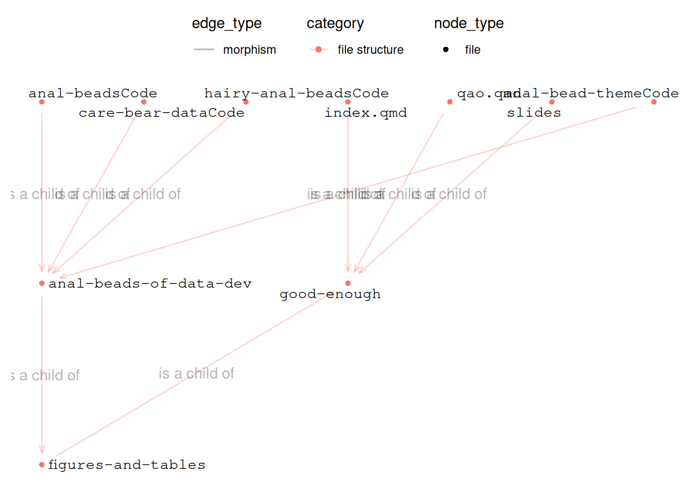

Code
# pkg
library(tidyverse)
library(ggraph)
library(tidygraph)Dr Charles T. Gray, Datapunk ![]()
# pkg
library(tidyverse)
library(ggraph)
library(tidygraph)My code is a mess, I have several scripts, I have different visualisations themed differently. Deployment is failing in multiple ways.
When I refactor, I want to refactor smarter. The intention is to develop a way of seeing the current state in a meaningful (and dimensionally-reducable) way and comparing it to the intended state.
And surely we can use some cool math to figure out how to get there. However, I am finding the process of categoric analysis of the codebase to be so useful that I already have a far clearer understanding of how to refactor now. I’m pretty sure that expectations are the key to defining classes usefully.
Loosely thought of categorically so that we can differentiate between the mappings.
Morphisms within categories: solid Functors between categories: dashed
I’m on an odyssey with graph plotting (see below), so here’s a sketch.
Digraphs are everywhere, how might we throw them all together to make sense of them?
My instincts are in dimension reduction and in categories. For now, I will start with constructing a hypergraph on three things:
See things as they are is useful, modelling how we would like them to be is useful, and finding ways of comparing is useful. But first we need the construction.
I have a blog post, slides, and another blog post where the theme is better.
In only one place is the visualisation displaying as I’d like.
Let’s see how to visualise this. We already have an epistomological intent digraph from a previous post. Now to join the other digraphs to that.
Let be the graph describing epistomological intent.
B_edges <-
tribble(
~from, ~to, ~edge_label,
"raw", "edges", "raw to df",
"edges", "nodes", "df to df",
"raw", "nodes", "raw to df",
"edges", "tidygraph", "df to graph",
"nodes", "tidygraph", "df to graph",
"tidygraph", "ggraph", "graph to vis",
"ggraph", "display", "vis to display",
"display", "deploy", "display to deploy"
) |>
mutate(
edge_type = "morphism",
category = "epistemological intention"
)# check assumption
colwise_check <- c("from", "to") %in% colnames(B_edges)
colwise_check[1] TRUE TRUE# convert colwise vector to boolean
all(colwise_check) == TRUE[1] TRUE# display edges
B_edges# A tibble: 8 × 5
from to edge_label edge_type category
<chr> <chr> <chr> <chr> <chr>
1 raw edges raw to df morphism epistemological intention
2 edges nodes df to df morphism epistemological intention
3 raw nodes raw to df morphism epistemological intention
4 edges tidygraph df to graph morphism epistemological intention
5 nodes tidygraph df to graph morphism epistemological intention
6 tidygraph ggraph graph to vis morphism epistemological intention
7 ggraph display vis to display morphism epistemological intention
8 display deploy display to deploy morphism epistemological intentionThen node metadata often needs to be extracted or inferred.
A challenge is node joining happens after the graph object is created.
output key assumption: there is exactly
one row per nodeinB_edges
B_nodes <-
# extract nodes from edges
tibble(
node = c(B_edges$from, B_edges$to)
) |>
# filter to unique nodes
distinct() |>
# add node attributes
mutate(
# necessary
node_label = node,
# contextual
painpoint = if_else(
node %in% c("deploy", "tidygraph"),
TRUE,
FALSE
),
node_emergence = if_else(
painpoint == TRUE,
"miscreant",
"expected"
),
name = node,
category = "epistemological intention",
node_type = "epistemology"
)the antijoin nodes and edges by node should have no rows
B_antijoin <-
{
tibble(
node = c(B_edges$from, B_edges$to)
) |>
# filter to unique nodes
distinct()
} |> anti_join(B_nodes |> select(node), by = "node")verify assumption
nrow(B_antijoin) == 0[1] TRUEdisplay nodes
B_nodes# A tibble: 7 × 7
node node_label painpoint node_emergence name category node_type
<chr> <chr> <lgl> <chr> <chr> <chr> <chr>
1 raw raw FALSE expected raw epistemolog… epistemo…
2 edges edges FALSE expected edges epistemolog… epistemo…
3 nodes nodes FALSE expected nodes epistemolog… epistemo…
4 tidygraph tidygraph TRUE miscreant tidygraph epistemolog… epistemo…
5 ggraph ggraph FALSE expected ggraph epistemolog… epistemo…
6 display display FALSE expected display epistemolog… epistemo…
7 deploy deploy TRUE miscreant deploy epistemolog… epistemo…B_graph <-
B_edges |>
as_tbl_graph() |>
activate(nodes) |>
# add node attributes
left_join(B_nodes, by = "name")
B_graph# A tbl_graph: 7 nodes and 8 edges
#
# A directed acyclic simple graph with 1 component
#
# Node Data: 7 × 7 (active)
name node node_label painpoint node_emergence category node_type
<chr> <chr> <chr> <lgl> <chr> <chr> <chr>
1 raw raw raw FALSE expected epistemolog… epistemo…
2 edges edges edges FALSE expected epistemolog… epistemo…
3 nodes nodes nodes FALSE expected epistemolog… epistemo…
4 tidygraph tidygraph tidygraph TRUE miscreant epistemolog… epistemo…
5 ggraph ggraph ggraph FALSE expected epistemolog… epistemo…
6 display display display FALSE expected epistemolog… epistemo…
7 deploy deploy deploy TRUE miscreant epistemolog… epistemo…
#
# Edge Data: 8 × 5
from to edge_label edge_type category
<int> <int> <chr> <chr> <chr>
1 1 2 raw to df morphism epistemological intention
2 2 3 df to df morphism epistemological intention
3 1 3 raw to df morphism epistemological intention
# ℹ 5 more rowsB_graph |>
ggraph() +
geom_edge_link(
arrow = arrow(
length = unit(0.02, "npc"),
angle = 20
),
alpha = 0.3,
start_cap = circle(0.03, 'npc'),
end_cap = circle(0.03, 'npc')
) +
geom_node_point(
aes(colour = node_emergence)
) +
geom_node_text(
aes(label = name),
repel = TRUE,
family = "Courier"
) +
theme_minimal() +
theme(
plot.title = element_text(
family = "Courier"
),
plot.subtitle = element_text(
family = "Courier"
),
plot.caption = element_text(
family = "Courier"
),
axis.text = element_blank(),
axis.title = element_blank(),
panel.grid = element_blank()
) +
labs(
title = "Development Expectation",
subtitle = "Known problems at tidygraph and deployment"
) +
ggplot2:::manual_scale(
"colour",
values = setNames(
c("#a6611a", "#018571","#dfc27d", "#80cdc1"),
c("violation", "virtuous", "miscreant", "expected")
)
)Using "sugiyama" as default layoutLet denote the directed graph of computational objects where the edges denote one computational object taking another as input.
F_edges <- tribble(
~from, ~to, ~edge_label,
"anal_beads_df", "anal_beads", "df to graph",
"anal_beads", "anal_beads_vis", "graph to vis",
"anal_beads_df", "hairy_anal_beads", "df to graph",
"hairy_anal_beads", "hairy_anal_beads_vis", "graph to vis"
) |>
mutate(
edge_type = "morphism",
category = "computational objects"
)F_edges# A tibble: 4 × 5
from to edge_label edge_type category
<chr> <chr> <chr> <chr> <chr>
1 anal_beads_df anal_beads df to graph morphism computational ob…
2 anal_beads anal_beads_vis graph to vis morphism computational ob…
3 anal_beads_df hairy_anal_beads df to graph morphism computational ob…
4 hairy_anal_beads hairy_anal_beads_vis graph to vis morphism computational ob…F_nodes <-
tibble(
name = c(F_edges$from, F_edges$to)
) |>
distinct() |>
mutate(
node_label = name,
node_emergence = "expected",
node_type = "function",
category = "computational objects"
)F_nodes# A tibble: 5 × 5
name node_label node_emergence node_type category
<chr> <chr> <chr> <chr> <chr>
1 anal_beads_df anal_beads_df expected function computatio…
2 anal_beads anal_beads expected function computatio…
3 hairy_anal_beads hairy_anal_beads expected function computatio…
4 anal_beads_vis anal_beads_vis expected function computatio…
5 hairy_anal_beads_vis hairy_anal_beads_vis expected function computatio…F_graph <- as_tbl_graph(F_edges) |>
activate(nodes) |>
left_join(F_nodes, by = "name")F_graph# A tbl_graph: 5 nodes and 4 edges
#
# A rooted tree
#
# Node Data: 5 × 5 (active)
name node_label node_emergence node_type category
<chr> <chr> <chr> <chr> <chr>
1 anal_beads_df anal_beads_df expected function computatio…
2 anal_beads anal_beads expected function computatio…
3 hairy_anal_beads hairy_anal_beads expected function computatio…
4 anal_beads_vis anal_beads_vis expected function computatio…
5 hairy_anal_beads_vis hairy_anal_beads_vis expected function computatio…
#
# Edge Data: 4 × 5
from to edge_label edge_type category
<int> <int> <chr> <chr> <chr>
1 1 2 df to graph morphism computational objects
2 2 4 graph to vis morphism computational objects
3 1 3 df to graph morphism computational objects
# ℹ 1 more row# time to convert this to a list so we can reuse it
button_vis <- list(
geom_edge_link(
aes(
linetype = edge_type,
colour = category,
label = edge_label,
tooltip = edge_label
),
arrow = arrow(
length = unit(0.02, "npc"),
angle = 20
),
label_alpha = 0.3,
alpha = 0.3,
start_cap = circle(0.03, 'npc'),
end_cap = circle(0.03, 'npc')
),
geom_node_point(
aes(colour = category,
shape = node_type)
),
geom_node_text(
aes(label = node_label),
repel = TRUE,
label_dodge = unit(2, "mm"),
family = "Courier"
),
theme_minimal(),
theme(
plot.title = element_text(
family = "Courier"
),
plot.subtitle = element_text(
family = "Courier"
),
plot.caption = element_text(
family = "Courier"
),
axis.text = element_blank(),
axis.title = element_blank(),
panel.grid = element_blank(),
legend.position = "top",
legend.direction = "vertical"
)
)Warning in geom_edge_link(aes(linetype = edge_type, colour = category, label =
edge_label, : Ignoring unknown aesthetics: tooltipWarning in geom_node_text(aes(label = node_label), repel = TRUE, label_dodge =
unit(2, : Ignoring unknown parameters: `label_dodge`F_graph |>
ggraph() +
button_visUsing "tree" as default layout
Let denote the graph of relevant files in the project where
Now, we want script files, but we don’t need all of it. Just what is relevant.
project_path <- "good-enough"
anal_beads_path <- "figures-and-tables/anal-beads-of-data-dev"
Y_edges <- tibble(
file_name = list.files(anal_beads_path)
) |>
mutate(file_parent = "anal-beads-of-data-dev") |>
add_row(
file_name = "anal-beads-of-data-dev",
file_parent = "figures-and-tables"
) |>
add_row(
file_name = "figures-and-tables",
file_parent = project_path
) |>
add_row(
file_name = "index.qmd",
file_parent = project_path
) |>
add_row(
file_name = "qao.qmd",
file_parent = project_path
) |>
add_row(
file_name = "slides",
file_parent = project_path
) |>
rename(
from = file_name,
to = file_parent
) |>
mutate(
edge_label = "is a child of",
category = "file structure",
edge_type = "morphism",
# .R seems to disappear from qmd
to = str_replace(to, ".R", "Code"),
from = str_replace(from, ".R", "Code")
)Y_edges# A tibble: 9 × 5
from to edge_label category edge_type
<chr> <chr> <chr> <chr> <chr>
1 anal-bead-themeCode anal-beads-of-data-dev is a child of file st… morphism
2 anal-beadsCode anal-beads-of-data-dev is a child of file st… morphism
3 care-bear-dataCode anal-beads-of-data-dev is a child of file st… morphism
4 hairy-anal-beadsCode anal-beads-of-data-dev is a child of file st… morphism
5 anal-beads-of-data-dev figures-and-tables is a child of file st… morphism
6 figures-and-tables good-enough is a child of file st… morphism
7 index.qmd good-enough is a child of file st… morphism
8 qao.qmd good-enough is a child of file st… morphism
9 slides good-enough is a child of file st… morphism Y_nodes <- tibble(
name = c(Y_edges$from, Y_edges$to)
) |>
distinct() |>
mutate(
node_label = name,
node_emergence = "expected",
node_type = "file",
category = "file structure"
)Y_nodes # A tibble: 10 × 5
name node_label node_emergence node_type category
<chr> <chr> <chr> <chr> <chr>
1 anal-bead-themeCode anal-bead-themeCode expected file file st…
2 anal-beadsCode anal-beadsCode expected file file st…
3 care-bear-dataCode care-bear-dataCode expected file file st…
4 hairy-anal-beadsCode hairy-anal-beadsCode expected file file st…
5 anal-beads-of-data-dev anal-beads-of-data-… expected file file st…
6 figures-and-tables figures-and-tables expected file file st…
7 index.qmd index.qmd expected file file st…
8 qao.qmd qao.qmd expected file file st…
9 slides slides expected file file st…
10 good-enough good-enough expected file file st…Y_graph <- Y_edges |>
as_tbl_graph() |>
activate(nodes) |>
left_join(Y_nodes, by = "name")Y_graph# A tbl_graph: 10 nodes and 9 edges
#
# A rooted tree
#
# Node Data: 10 × 5 (active)
name node_label node_emergence node_type category
<chr> <chr> <chr> <chr> <chr>
1 anal-bead-themeCode anal-bead-themeCode expected file file st…
2 anal-beadsCode anal-beadsCode expected file file st…
3 care-bear-dataCode care-bear-dataCode expected file file st…
4 hairy-anal-beadsCode hairy-anal-beadsCode expected file file st…
5 anal-beads-of-data-dev anal-beads-of-data-… expected file file st…
6 figures-and-tables figures-and-tables expected file file st…
7 index.qmd index.qmd expected file file st…
8 qao.qmd qao.qmd expected file file st…
9 slides slides expected file file st…
10 good-enough good-enough expected file file st…
#
# Edge Data: 9 × 5
from to edge_label category edge_type
<int> <int> <chr> <chr> <chr>
1 1 5 is a child of file structure morphism
2 2 5 is a child of file structure morphism
3 3 5 is a child of file structure morphism
# ℹ 6 more rowsY_graph |>
ggraph() +
button_visUsing "tree" as default layout
igraph::degree(Y_graph) anal-bead-themeCode anal-beadsCode care-bear-dataCode
1 1 1
hairy-anal-beadsCode anal-beads-of-data-dev figures-and-tables
1 5 2
index.qmd qao.qmd slides
1 1 1
good-enough
4 Now that we have our different digraphs, we will join them in a hyperdigraph.
S_functors <- tribble(
~from, ~to, ~edge_label,
"anal_beads_df", "edges", "is an instantition of",
"hairy_anal_beads", "tidygraph", "is an instantition of",
"anal_beads", "tidygraph", "is an instantition of",
"anal_beads_vis", "ggraph", "is an instantiation of",
"hairy_anal_beads", "ggraph", "is an instantiation of",
"anal_beads_df", "anal-beads.R", "is contained in"
) |>
mutate(
edge_type = "functor",
category = "structured intelligence system"
)S_edges <-
B_edges |>
mutate(morphism = "epistemic intention") |>
bind_rows(F_edges) |>
bind_rows(Y_edges |> mutate(
morphism = "is an element of",
edge_label = morphism,
edge_type = "morphism"
)) |>
bind_rows(S_functors) |>
# edge labels too messy for now
mutate(edge_label = "") S_edges |> gt::gt()| from | to | edge_label | edge_type | category | morphism |
|---|---|---|---|---|---|
| raw | edges | morphism | epistemological intention | epistemic intention | |
| edges | nodes | morphism | epistemological intention | epistemic intention | |
| raw | nodes | morphism | epistemological intention | epistemic intention | |
| edges | tidygraph | morphism | epistemological intention | epistemic intention | |
| nodes | tidygraph | morphism | epistemological intention | epistemic intention | |
| tidygraph | ggraph | morphism | epistemological intention | epistemic intention | |
| ggraph | display | morphism | epistemological intention | epistemic intention | |
| display | deploy | morphism | epistemological intention | epistemic intention | |
| anal_beads_df | anal_beads | morphism | computational objects | NA | |
| anal_beads | anal_beads_vis | morphism | computational objects | NA | |
| anal_beads_df | hairy_anal_beads | morphism | computational objects | NA | |
| hairy_anal_beads | hairy_anal_beads_vis | morphism | computational objects | NA | |
| anal-bead-themeCode | anal-beads-of-data-dev | morphism | file structure | is an element of | |
| anal-beadsCode | anal-beads-of-data-dev | morphism | file structure | is an element of | |
| care-bear-dataCode | anal-beads-of-data-dev | morphism | file structure | is an element of | |
| hairy-anal-beadsCode | anal-beads-of-data-dev | morphism | file structure | is an element of | |
| anal-beads-of-data-dev | figures-and-tables | morphism | file structure | is an element of | |
| figures-and-tables | good-enough | morphism | file structure | is an element of | |
| index.qmd | good-enough | morphism | file structure | is an element of | |
| qao.qmd | good-enough | morphism | file structure | is an element of | |
| slides | good-enough | morphism | file structure | is an element of | |
| anal_beads_df | edges | functor | structured intelligence system | NA | |
| hairy_anal_beads | tidygraph | functor | structured intelligence system | NA | |
| anal_beads | tidygraph | functor | structured intelligence system | NA | |
| anal_beads_vis | ggraph | functor | structured intelligence system | NA | |
| hairy_anal_beads | ggraph | functor | structured intelligence system | NA | |
| anal_beads_df | anal-beads.R | functor | structured intelligence system | NA |
Okay the weirdest thing, the nodes are getting dropped from qmd but not from the console.
S_nodes <-
B_nodes |>
mutate(category = "epistemology") |>
bind_rows(Y_nodes |> mutate(
category = "file structure"
)) |>
bind_rows(F_nodes |> mutate(
category = "computational objects"
)) |>
select(name, node_label, category, node_type) S_nodes |> View()S_graph <- S_edges |>
as_tbl_graph() |>
activate(nodes) |>
left_join(S_nodes)Joining with `by = join_by(name)`S_graph# A tbl_graph: 23 nodes and 27 edges
#
# A directed acyclic simple graph with 2 components
#
# Node Data: 23 × 4 (active)
name node_label category node_type
<chr> <chr> <chr> <chr>
1 raw raw epistemology epistemology
2 edges edges epistemology epistemology
3 nodes nodes epistemology epistemology
4 tidygraph tidygraph epistemology epistemology
5 ggraph ggraph epistemology epistemology
6 display display epistemology epistemology
7 anal_beads_df anal_beads_df computational objects function
8 anal_beads anal_beads computational objects function
9 hairy_anal_beads hairy_anal_beads computational objects function
10 anal-bead-themeCode anal-bead-themeCode file structure file
# ℹ 13 more rows
#
# Edge Data: 27 × 6
from to edge_label edge_type category morphism
<int> <int> <chr> <chr> <chr> <chr>
1 1 2 "" morphism epistemological intention epistemic intention
2 2 3 "" morphism epistemological intention epistemic intention
3 1 3 "" morphism epistemological intention epistemic intention
# ℹ 24 more rowsS_graph |>
ggraph() +
button_visUsing "sugiyama" as default layoutWarning: Removed 1 row containing missing values or values outside the scale range
(`geom_point()`).Warning: Removed 1 row containing missing values or values outside the scale range
(`geom_text_repel()`).